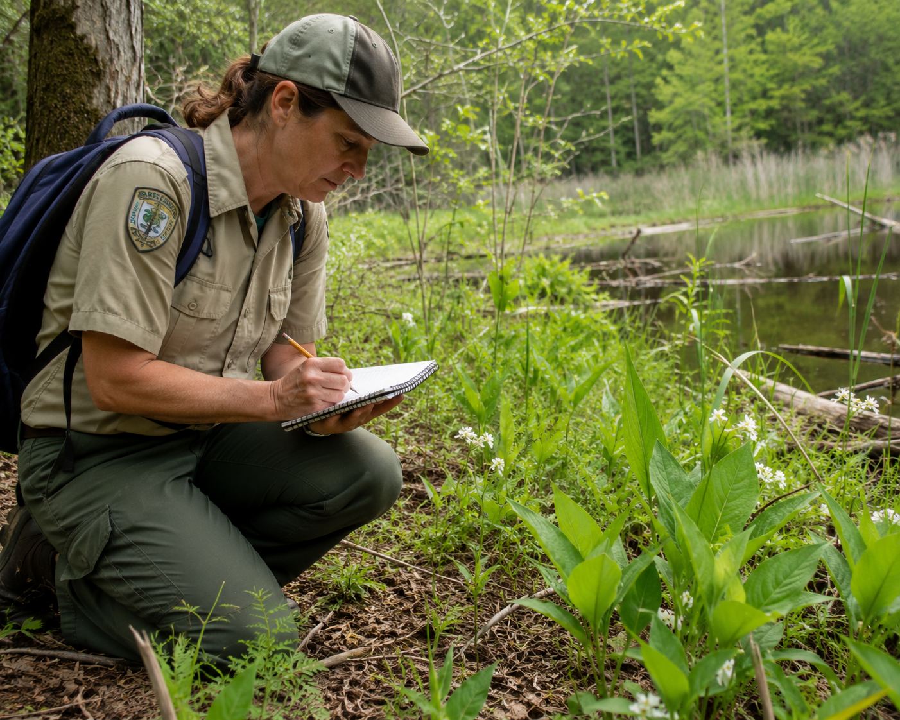

Hold this question in your mind as you work through the lesson. By the end, you should be able to answer it with evidence.
Start here. Learn the words you will use today.
Take a good look at the photo above. You're looking at a real national park ecosystem. Before we read or learn anything new, just notice what you see.
There are no wrong observations here. Scientists always begin by looking carefully and asking questions. Come back to your observations at the end of the lesson — you may be surprised how much your thinking changes.
These are the words scientists use when they study ecosystems and conservation. Tap each card to flip it and read the definition. You'll see these words throughout the lesson.
Copy this sentence carefully into your science notebook:
"The organisms in an ecosystem depend on their habitat — and protecting that habitat protects all the life within it."
Now learn the main science idea.

Every national park is an ecosystemEcosystemAll the living things and nonliving things in an area that interact with each other.. That means it includes every plant, animal, and other organism that lives there — plus all the nonliving things like water, soil, temperature, and sunlight. These parts don't just share space. They interact constantly.
A tree shades the soil and keeps it cool. A frog eats insects and gets eaten by a heron. Rain fills a pond. Everything connects to everything else. When scientists study a national park, they look at the habitatHabitatThe place where an organism lives and finds food, water, shelter, and space., the organisms, and the environmental conditionsEnvironmental ConditionsThe nonliving features of a place — temperature, rainfall, sunlight — that shape which organisms can live there. all together.
Here's something scientists know for certain: not every organism can survive in every place. In any given habitat, some organisms thrive, some barely get by, and some can't survive at all.
An alligator can't live in a snowy mountain forest — the temperature is wrong, the food is wrong, and the water isn't there. But in the Florida Everglades, it does just fine. It has the right body, the right food sources, and exactly the environmental conditionsEnvironmental ConditionsThe nonliving features of a place — temperature, rainfall, sunlight — that shape which organisms can live there. it needs. The match between an organism and its habitat is what makes survivalSurviveTo stay alive by getting the food, water, shelter, and conditions you need. possible.
Natural hazards — droughts, floods, wildfires, and hurricanes — can change an ecosystem quickly. When that happens, some organisms survive, some move to new places, and some don't make it.
Humans change ecosystems too — through pollution, building, and the spread of invasive species. That's exactly why conservationConservationProtecting natural places and living things so ecosystems can stay healthy. matters. National parks protect ecosystems from many of these changes. Scientists and rangers work together to study the habitat, track the organisms, and make sure the conditions stay right for everything that lives there.
Real-World Connection: The Florida Everglades is one of the most studied and protected ecosystems in the United States — but scientists still track it constantly because even small changes can affect hundreds of species.
In any habitat, some organisms survive well, some survive less well, and some cannot survive at all. The match between an organism and its environmental conditions is what determines whether it can live there.
Protecting a national park ecosystem means protecting those conditions — so the organisms that depend on them can survive.
Curious? Go Deeper
Scientists who study national park ecosystems are called ecologists. One of the hardest parts of their job isn't collecting data — it's figuring out which environmental conditions matter most. Temperature? Water availability? Soil type? All of these interact in complicated ways.
In Yellowstone National Park, scientists made a surprising discovery after wolves were reintroduced in 1995. The wolves changed where elk grazed, which allowed riverside plants to grow back, which slowed soil erosion, which changed the course of rivers. One species affected everything else. Scientists call this a trophic cascade — a chain reaction through the whole ecosystem.
This is exactly why conservation isn't just about protecting one animal. It's about protecting the whole web of connections in an ecosystem — because every piece affects every other piece.
Now test the idea yourself.
You're going to research one national park ecosystem — using the profiles below. Read all three carefully, then pick the one that interests you most. You'll use the research chart to record what you learn.
Read each park profile carefully before you pick one. Think about what you already know from earlier in the year — you may recognize some of these places!
🏞️ Choose One Park to Research
Three Key Organisms: American alligator (apex predator that controls prey populations), sawgrass (a sharp wetland plant that grows in dense clusters), roseate spoonbill (a wading bird with a distinctive pink color that feeds in shallow water).
How They Survive Here: Alligators thrive because warm water temperatures and abundant fish match their needs exactly. Sawgrass survives periodic flooding that would kill most plants. Spoonbills use their flat bills to sweep through shallow muddy water for small fish.
One Big Challenge: Burmese pythons — large invasive snakes that were not originally from the Everglades — have multiplied rapidly and eat many native animals, disrupting the food web.
One Conservation Effort: Scientists and rangers run active python removal programs, trapping and removing thousands of pythons each year to protect native species.
Three Key Organisms: Black bear (omnivore that eats berries, insects, and fish), giant sequoia (the world's largest tree by volume, which needs fire to release its seeds), mule deer (grazer that thrives on meadow grasses and shrubs).
How They Survive Here: Black bears can eat many different foods, which helps them survive through changing seasons. Giant sequoias have thick fire-resistant bark. Mule deer migrate to lower elevations in winter when snow covers their food sources.
One Big Challenge: Droughts and increasing wildfires threaten both the forest habitat and the giant sequoias — some ancient trees have been damaged or killed by recent fires that burned hotter than historical fires.
One Conservation Effort: Rangers use controlled burns — intentionally set, carefully managed fires — to clear dead brush before it can fuel a larger, more destructive wildfire.
Three Key Organisms: American bison (the largest land animal in North America, which grazes on grasses), gray wolf (apex predator reintroduced in 1995), elk (large deer species that grazes in meadows and valleys).
How They Survive Here: Bison survive cold winters by using their large heads to push snow aside and reach grasses underneath. Wolves travel in packs, which allows them to hunt large prey like elk. Elk migrate within the park, following the snowmelt uphill as temperatures warm in spring.
One Big Challenge: Managing wolf and elk populations so that neither grows too large — if elk overpopulate, they overgraze river banks, which causes erosion and damages the habitat for fish and other animals.
One Conservation Effort: The wolf reintroduction program brought wolves back in 1995 after they had been absent for 70 years. The return of wolves changed elk behavior and allowed riverside plants to recover.
📋 Research Steps
Choose your park. Read all three profiles carefully, then circle or write down the park you've chosen. Pick the one you find most interesting.
Set up your chart. Draw the Park Research Chart from the box below into your science notebook. Copy the headers exactly — you'll fill in the data cells with what you learned.
Fill in your chart using information from the park profile you chose. Be specific — don't just copy the whole paragraph. Pull out the key details that belong in each row.
Answer the Think Further question at the bottom of your chart. Write at least two complete sentences.
| Research Category | What I Found Out |
|---|---|
| 🏞️ Park Name & Location | write it here |
| 🌡️ Climate & Environmental Conditions | write it here |
| 🐾 3 Organisms That Live There | write it here |
| 💪 How They Survive in This Habitat | write it here |
| ⚠️ One Challenge Facing This Ecosystem | write it here |
| 🛡️ One Conservation Effort | write it here |
After filling in your research chart, take a few more minutes to think about what you noticed. Use specific details from the park profile you chose.
Tell the story of the ecosystem you researched — what it's like there, what lives there, and what scientists are doing to protect it. Try to explain it as if you're describing it to someone who has never heard of this park.
Think through each question on your own. Talk it over in your mind — or with a family member — before moving on.
Check what you understand.
Show what you learned.
🔍 Part A — Identify and Sort
Write each item below in the correct column of a two-column chart in your notebook. Label the columns Living Things and Nonliving Things.
Word Bank: river water, alligator, temperature, sawgrass, sunlight, bison, soil type, gray wolf, rainfall, giant sequoia, air, roseate spoonbill
🚀 Part B — Short Answer
Answer each question in complete sentences. Use your science vocabulary!
Pick one organism from a national park ecosystem. Can it survive in a completely different habitat? Use what you learned to explain your thinking.
What do you think?
💡 Start with: "I think that [organism's name] could / could not survive in [different habitat] because…"
What did you observe or learn that supports your thinking?
💡 Start with: "I know this because the lesson showed that…"
Why does that make sense?
💡 Start with: "This makes sense because…"
📚 Try to use at least one of these words in your answer: habitat, environmental conditions, survive, ecosystem
🎨 Part C — Draw & Label
Draw a simple ecosystem scene from the national park you researched. Show at least four organisms in their habitat. Label each organism and draw one arrow showing how it connects to something else in the ecosystem (for example: wolf → elk, or tree → bird).
Submit your work on Canvas using one of these options:
Make sure your submission includes all of these: